Design Challenge:
Redesign of 12306.cn & its App in 1 Day
UI/UX design/ Independent Project
Project Brief
As the biggest online train ticket retailer in China, 12306.cn and its mobile App are not designed user-friendly. Therefore, after the usability test and user research, I redesigned them.
The whole design was finished in 1 day.
Heuristic Evaluation
According to Nielsen's 10 Usability Heuristics, I conducted a heuristic evaluation of 12306.cn and found some problems.
Task 1: Buying Tickets
There is so much information on the website that I cannot find where can I buy tickets at first. I looked at the navigation bar, but the "buy tickets" button was not there. Instead, it was hidden on the left side.
The App is relatively easy to use. However, there is still much disturbing and useless information at the homepage.
Against the following rules:
Flexibility and efficiency of use
Aesthetic and minimalist design
Task 2: Ordering the Meal
As a special feature of www.12306.cn, customers can order take-out food on the train, including McDonald's, KFC, and other famous brands. The meals are prepared by local restaurants and can be delivered to the train after customers' placing the order.
Users have to enter the train ID before ordering the meal whether on the website or the App. Thus, they cannot see the meals in advance.
Against the rules:
Flexibility and efficiency of use
Task 3: Seeking for Help
The previous experience made me look to the left side of the website again. I saw their telephone, but I only had a small question and didn't want to make a call. Eventually, I clicked a button on the navigation bar and found some tips.
After 30 minutes' struggling, I was still struggling with finding helpful tips on the mobile App.
Agaist the following rules:
Help and documentation
Aesthetic and minimalist design
Consistency and standards
Task 4: Checking the Arrival Time after Buying a Ticket
Users cannot check the arrival time on the website after buying a ticket unless they enter the train ID, whether on the website or the App.
Agaist the following rules:
Visibility of sytem status
Recognition rather than recall
Consistency and standards
Redesign: Information Architecture
As the most important and frequently-used function, ticket purchasing should be conspicuous at the homepage.
All the information is in the "about" page. The 12306 member is also an important feature and a source of profit.
Users can check their schedules, instead of the tickets(which is less useful to them) via "my schedule".
Web Design
Homepage
Ticket purchasing, as the most important function, is placed at the center of the homepage.
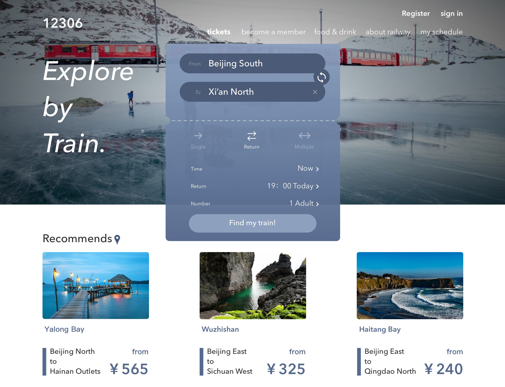My shchedule
Users can clearly see the details of the tickets they bought. They can also change or refund the ticket in this page.
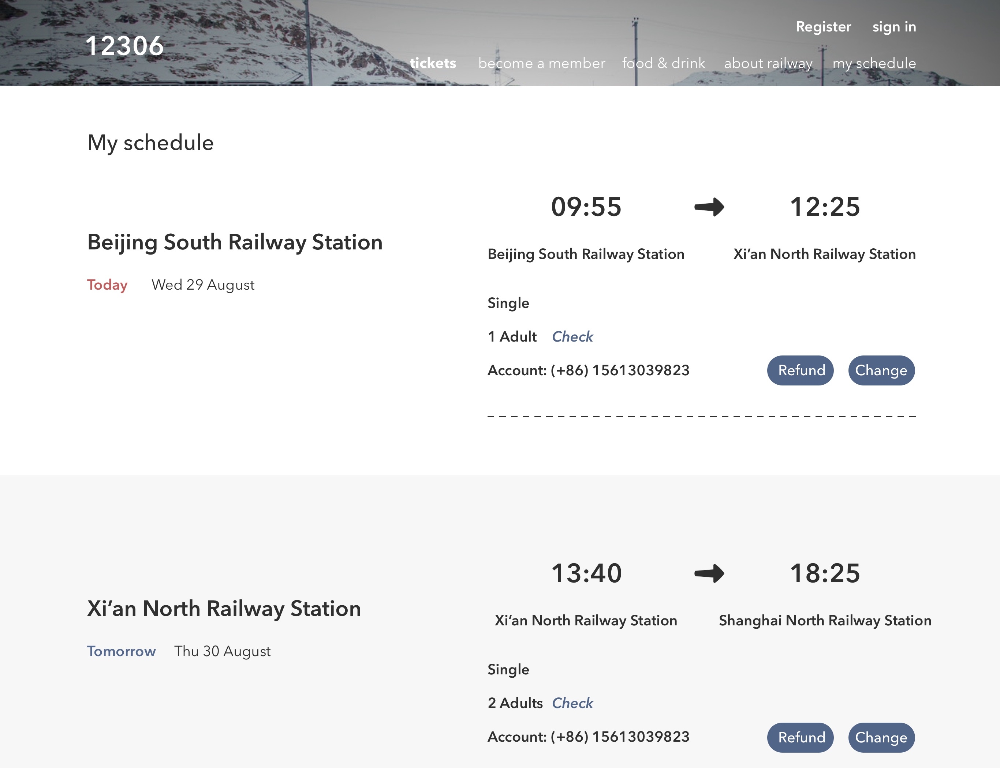Become a member
The illustrations could show the advantages of being a member and attract users to do so.
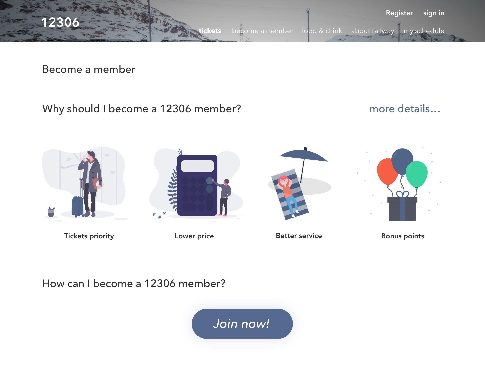App Design
Tickets
Users can choose the location, the type of tickets and other relevant options when buying tickets.
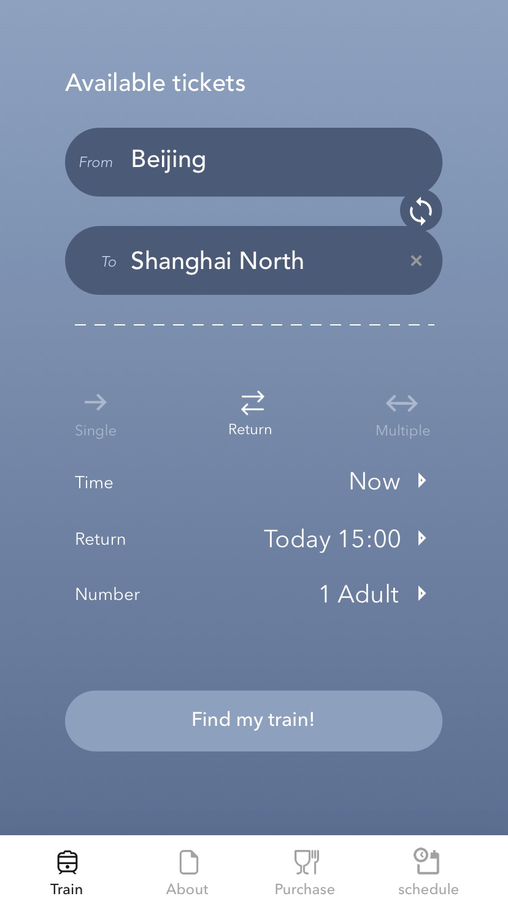About
Users can browse the relevant information of the 12306 member. They can also find some tips or add a question.
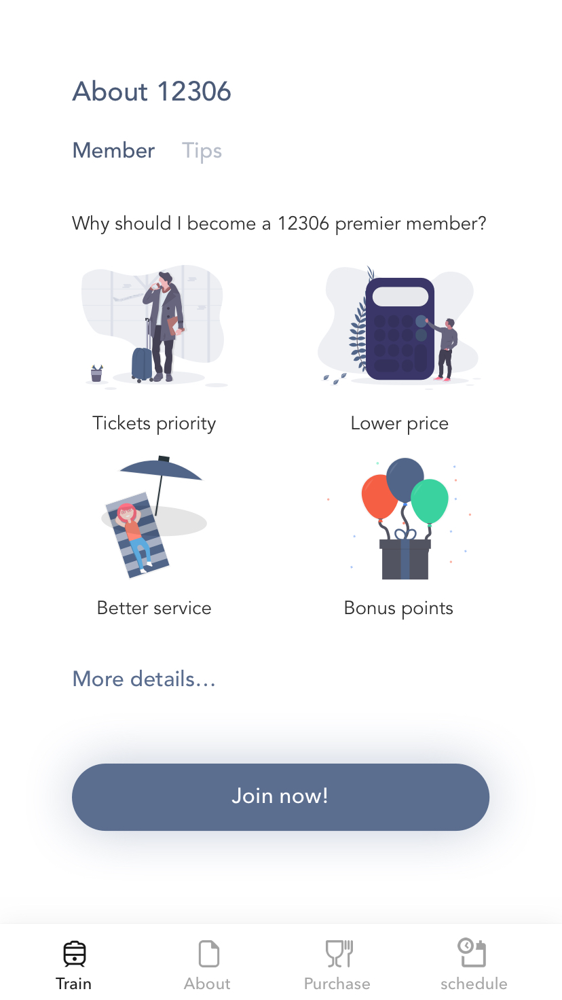 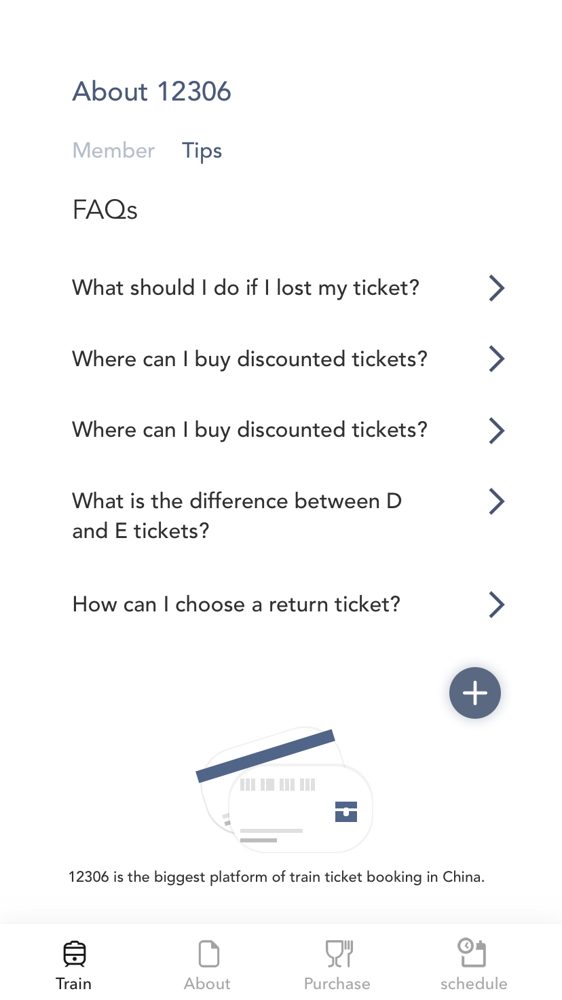 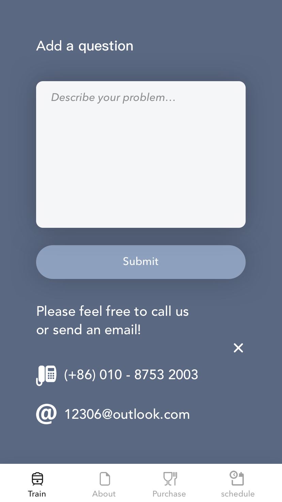Purchase
Users can buy food, drink and souvenirs directly via the App. Their train ID will be upload to the system automatically.
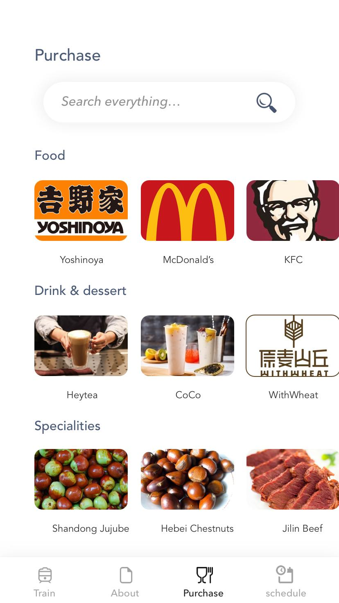 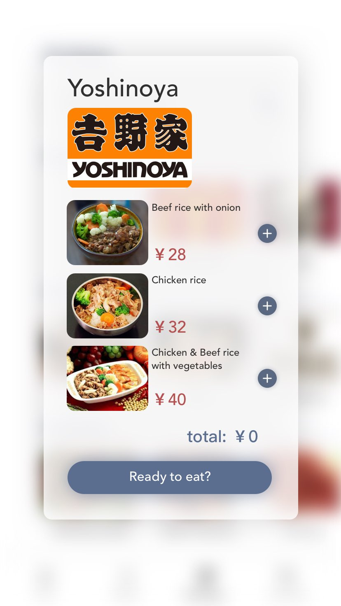Schedule
User can check their schedule(slightly different with tickets) and all the details about the journey on this page. In most cases, the departure's time and station are more important than arrival's(which are designed less conspicuous).
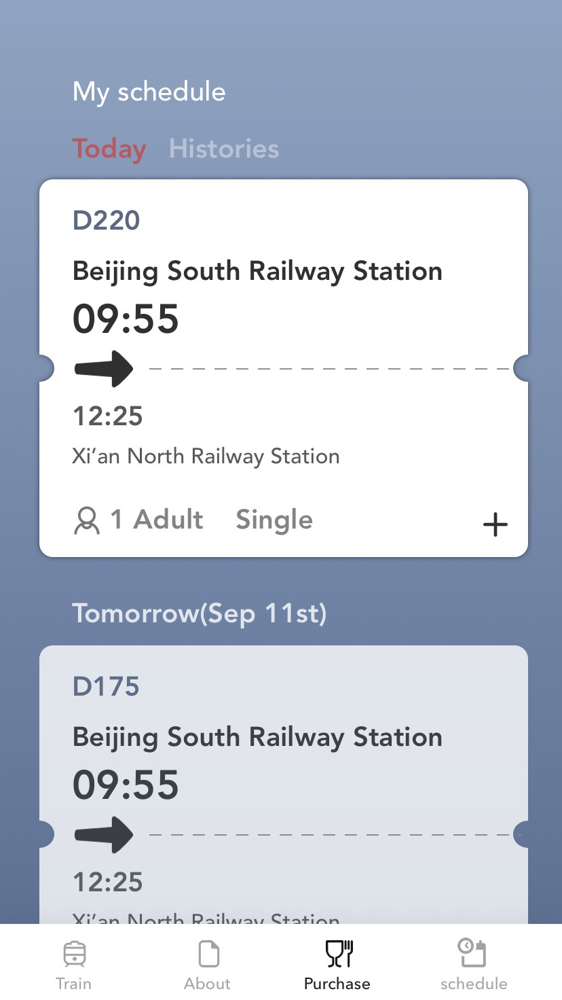 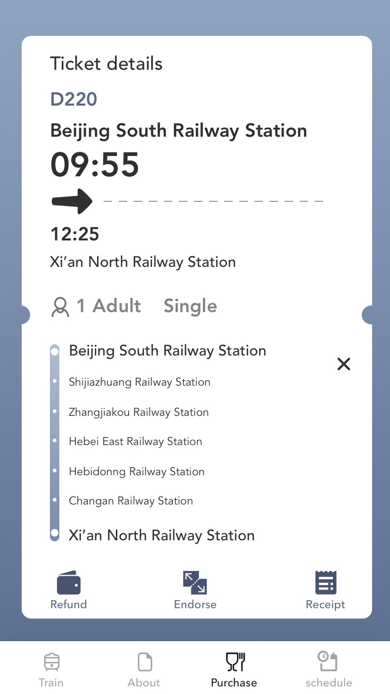
UI Movement Design
The UI movements are designed user-friendly as well as interesting.